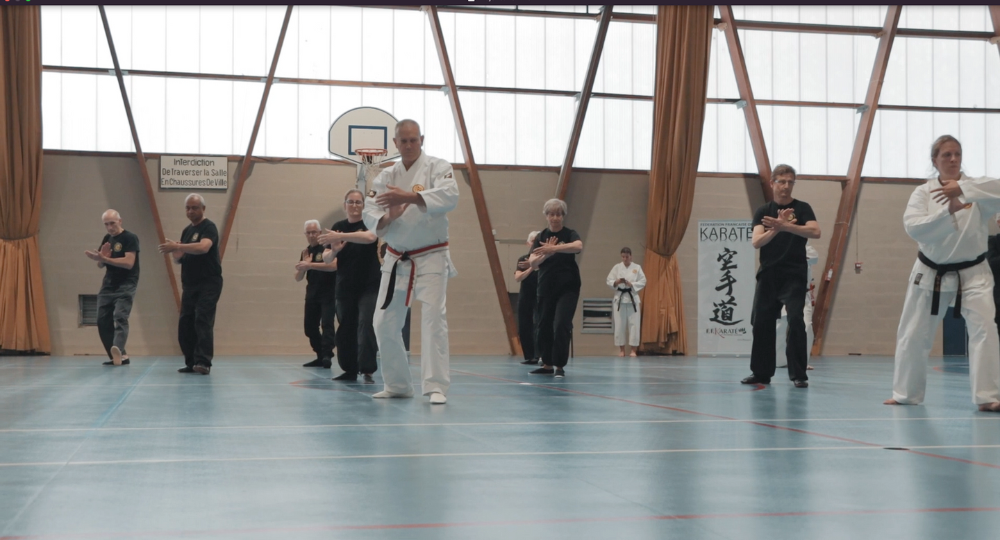

L'art martial complémentaire au karaté consacré au maniement des armes traditionnelles okinawaïennes : Bō, Saï, Tonfa et Nunchaku.

Issu de l'adaptation des outils agraires par les habitants d'Okinawa, le Kobudo développe la coordination motrice, la précision et la gestion des distances.
Bâton en bois dur de 1,82m. Arme maîtresse du Kobudo pour l'extension du corps, les balayages et les attaques à longue portée.
Arme en acier à trois branches maniée par paire. Conçue pour parer les lames de sabre, bloquer et riposter avec précision.
Poignées en bois dérivées des meules à grain. Offre une protection efficace le long de l'avant-bras et des frappes circulaires puissantes.
Fléau à riz en bois relié par une corde. Exige une grande dextérité pour la maîtrise du rythme et de la vitesse de rotation.
La pratique du Kobudo enrichit directement le Karaté en renforçant la poigne, la stabilité des postures et la fluidité des hanches.
À travers l'apprentissage des katas traditionnels d'armes, les élèves découvrent l'héritage martial préservé des grands maîtres d'Okinawa.
Les séances de Kobudo sont ouvertes aux ados et adultes au Gymnase Pierre de Coubertin à Brunoy.